Beam stress component plots
In the Frame environment, beam stress component plots are available for structural frame models with a beam mesh type. When you select Stress from the Result Type list in the Data Selection group, you can review the simulation results for any of the following beam stress component plots:
Positive values indicate areas of tensile stress. Negative values indicate areas of compressive stress.
Beam stress recovery point plots
On the beam cross section, you can plot the combined stress results from tension and compression at each stress recovery point (Pt1, Pt2, Pt3, and Pt4).
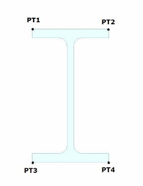
Because the combined stress results usually are the same for End A and for End B, just one result is reported. Only when another stiffness is attached to a shared node does the plot show a different result at that end.
Plot these results by selecting the following data types from the Result Component list in the Data Selection group:
-
Beam Pt1 Combined Stress
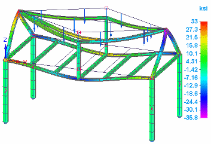
-
Beam Pt2 Combined Stress
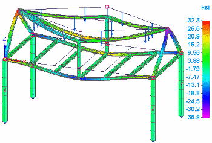
-
Beam Pt3 Combined Stress
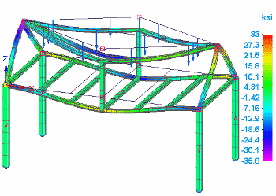
-
Beam Pt4 Combined Stress
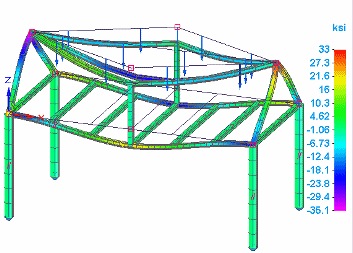
In Femap, you can modify the stress recovery and reference points on the cross section. In Solid Edge Simulation, you can get more information about the beam cross section using the View Beam Properties shortcut command. To learn more, see Beam properties.
Beam combined stress plots
You can show the minimum and maximum combined axial stress and bending stress results on a beam.
Plot these results by selecting one of the following data types from the Result Component list in the Data Selection group:
-
Beam Max Combined Stress
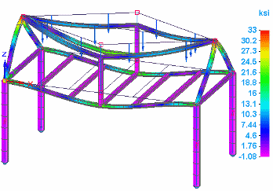
-
Beam Min Combined Stress
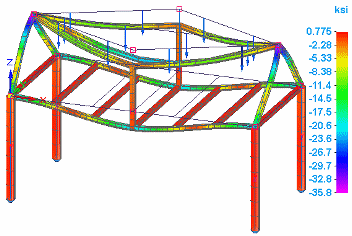
Beam tension plot
Tension acts as a pulling force on a structural frame element. A beam responds to tension by elongating in the direction of the applied force.
You can plot the results of tension on a beam by selecting the following data type from the Result Component list in the Data Selection group:
-
Beam Tension M.S. (Margin of Safety)
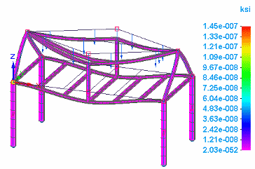
Beam compression plot
Compression acts as a squeezing force on a structural frame element. A beam responds to a compression force by shortening along the direction of the applied force.
You can plot the beam compression results by selecting the following data type from the Result Component list in the Data Selection group:
-
Beam Compression M.S. (Margin of Safety)
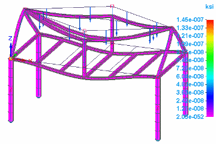
Note:Margin of Safety (MS) represents the reserve strength a structure must have when fully loaded. The margin of safety allows extra load range in the event the material is weaker than expected or an applied load is higher than anticipated.
Beam Von Mises stress plots
Plot Von Mises stress results by selecting one of the following data types from the Result Component list in the Data Selection group:
-
Beam End A Von Mises Stress
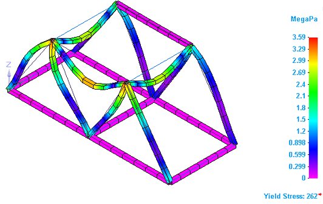
-
Beam End B Von Mises Stress
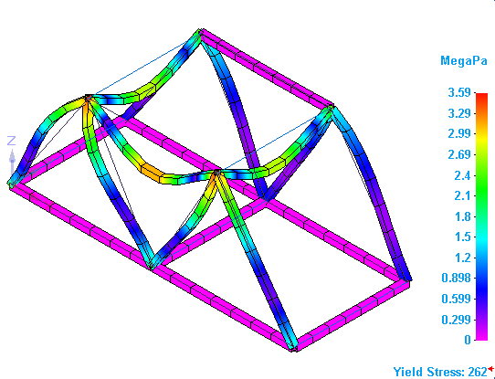
Note:Because the stress results usually are the same for Beam End A and for Beam End B, the plot results appear the same. Only when another stiffness is attached to a shared node does the plot show a different result at that end.
-
Beam Factor of Safety
Factor of Safety (FoS) is a measure of a how much stronger a structure needs to be than the load it should withstand. The Factor of Safety plot shows the maximum Von Mises stress value at a beam end, either Beam End A Von Mises Stress or Beam End B Von Mises Stress.
Unlike a Von Mises stress plot, a Factor of Safety plot never shows negative values.
This Beam Factor of Safety plot is displayed using the actual computed factor of safety values by selecting the All Results Scale option on the Color Bar tab→Scale group.
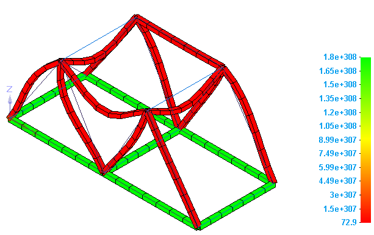
You also can display a factor of safety plot result by selecting the User-Defined Scale option and entering Min and Max safety values.
For more information, see the Factor of Safety plots section in Stress component plots.
How do I
Plot resultsLearn more
Plotting resultsResult plots for mixed mesh models
Displacement component plots
Stress component plots
Constraint component plots
Strain component plots
Beam properties
Beam reaction component plots
Beam diagrams
Temperature plots
Heat flux component plots
Applied temperature plots